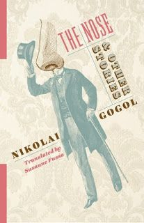
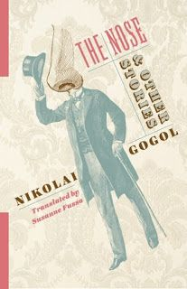

Introduction To Russian Literature
Emerging as a distinct tradition in the 19th century, Russian literature is renowned for its depth, complexity, and profound exploration of human nature, society, and philosophy. It produced some of the world's most celebrated authors, such as Alexander Pushkin, often regarded as the father of modern Russian literature. The Golden Age saw the rise of literary giants like Fyodor Dostoevsky, whose works delve into psychological and existential questions, and Leo Tolstoy, known for epic novels like War and Peace and Anna Karenina.
The 20th century brought the Silver Age of poetry, featuring like Anna Akhmatova and Vasily Grossman. Despite the challenges of political censorship and oppression during the Soviet era, Russian literature continued to thrive, offering poignant reflections of freedom, identity, and morality. Today it remains a cornerstone of global literature, celebrated for its timeless relevance and emotional depth.

 
